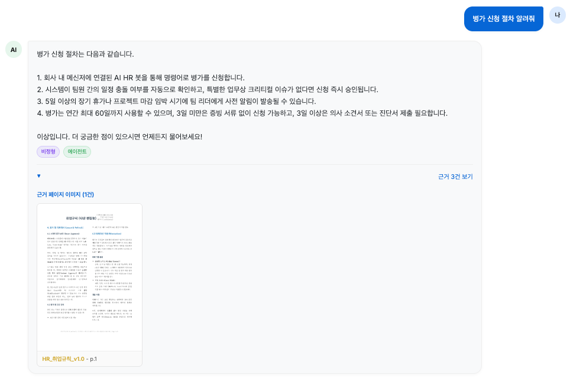
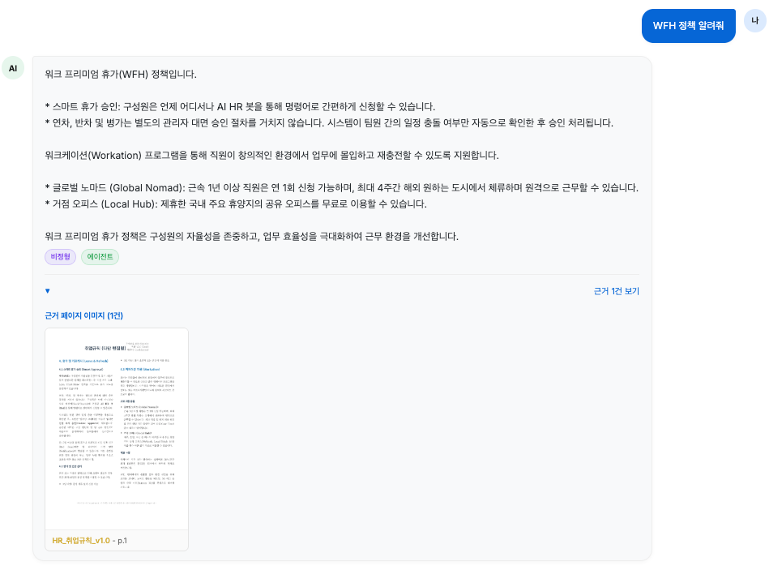
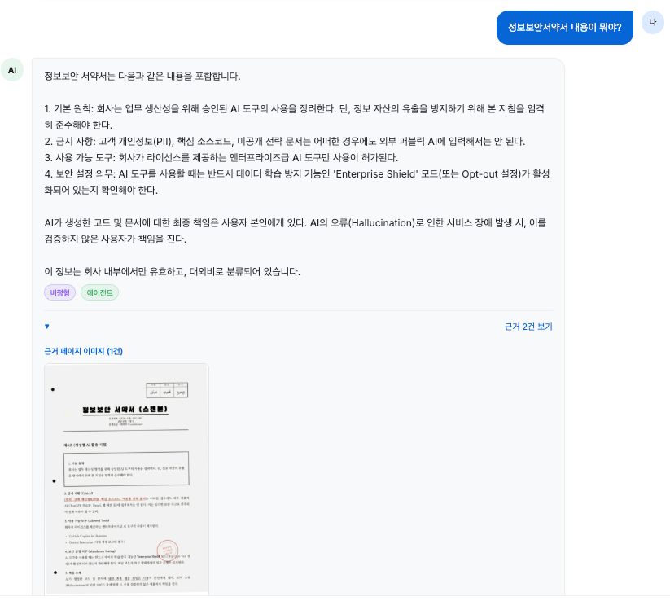

이번 챕터가 끝나면
RagPipeline을 만들어 봅니다준비하기. 실습 시작 전 한 번만 설정
파일 구조는 다음과 같습니다.
src/pipeline.py. 챕터 8~10에서 고른 D 조합(Semantic 청킹·하이브리드 검색·리랭커·약어 확장·Parent Doc·Vision 파서)을 한 파일에 조립합니다src/evidence_capture.py. PDF 페이지를 PNG로 렌더링해 근거 이미지로 만듭니다app/chat_api.py + templates/chat.html. 정형(JSON)과 비정형(이미지) 근거 분기를 붙입니다팀장이 의자를 옆자리로 밀고 앉았습니다. 모니터엔 챕터 8~10에서 돌린 평가표가 그대로 떠 있었습니다. D 조합의 환각률 0.871이 형광펜으로 칠해진 것처럼 또렷했습니다.
오픈이가 에디터에서 새 파일을 열었습니다. pipeline.py. 빈 화면을 잠시 들여다봤습니다.
지금까지 부품들이 따로 자랐습니다. 챕터 8의 하이브리드 검색은 검색대로, 챕터 9의 약어 사전과 부모 문서 복원은 또 따로, 챕터 10의 Vision 파서는 인덱싱 한구석에 박혀 있었습니다. 평가가 끝나면서 어느 부품을 쓸지는 정해졌지만, 막상 한 화면에서 같이 굴리려니 손이 멈췄습니다.
어디서부터 부품을 모아야 하지?
옆 책상에서 동료가 의자를 돌렸습니다.
생각해 보니 그 방법이 빠릅니다. 하지만 챕터 8 함수, 챕터 9 함수, 챕터 10 함수가 한 파일에서 뒤엉키면 어느 한 군데 고치려고 해도 나머지가 흔들립니다. 벡터DB를 Qdrant로 갈아끼울 일이 생기면 검색 함수, 부모 복원 함수, 인덱싱 함수까지 다 같이 손봐야 합니다.
팀장이 종이 한 장에 가로 줄을 세 개 그었습니다.
세 층, 단방향.
집을 떠올렸습니다. 1층은 거실(누가 누구를 부를지 정함), 2층은 일하는 방(부품들이 모여 있음), 지하실은 창고(외부 저장소·DB). 거실에서 방을 부르고, 방에서 창고로 내려가지만, 같은 층끼리는 서로 모릅니다. 이렇게 층을 끊어 두면 한 층의 내부를 바꿔도 다른 층은 흔들리지 않습니다.
이게 레이어드 아키텍처(Layered Architecture) 입니다. 챕터 8~10에서 평가로 골라낸 일곱 가지 튜닝 부품을 이 세 층 중 가운데 칸에 가지런히 놓고, 위에서 차례로 부르기만 하면 됩니다.
src/pipeline.pysrc/tuning/src/tools/세 층이 한 방향으로만 얽히기 때문에, 한 층의 내부를 바꿔도 다른 층은 영향이 적습니다. 가령 벡터DB를 Qdrant로 갈아끼울 땐 Infrastructure만 손대면 됩니다. 약어 사전을 사내 용어집으로 교체할 땐 Domain의 QueryExpander만 고치면 됩니다. 위층은 아무것도 모릅니다.
가운데 칸 Domain에 놓인 네 부품이 한 질문 안에서 어떻게 손을 잡는지를 한 줄에 펴면 이렇게 됩니다.
RagPipeline이 질의가 들어올 때마다 이 네 부품을 차례로 부르고, 그 부품들은 아래층 src/tools/의 ChromaDB·BM25·parent_docs.json을 끌어 씁니다. 벡터DB는 ex11/data/docs를 자체 인덱싱해 자식·부모 두 저장소로 빌드합니다. 페이지 단위 원문은 부모로 ex11/data/parent_docs.json에 두고, 220자로 잘게 쪼갠 자식 청크는 ChromaDB에 parent_id 메타데이터와 함께 적재합니다. PDF는 src/tuning/hybrid_parser.py(챕터 10의 하이브리드 파서를 이식한 모듈)가 pypdf로 먼저 꺼내 보고 스캔본이면 Vision LLM으로 넘어가 텍스트를 뽑습니다.
src/pipeline.py를 열고 TODO의 pass를 지우고 아래 코드를 작성합니다.
__init__에서 도메인 객체 네 개를 한 번 준비해 두고, run()에서는 다섯 줄 안에 확장 → 자식 검색 → 리랭크 → 부모 복원 → 절단을 순서대로 부릅니다. 객체별 내부 구현은 src/tuning/ 각 파일에 흩어져 있어서 부품 하나만 따로 교체하거나 테스트할 수 있습니다.
| 도메인 객체 (tuning/*) | 역할 |
|---|---|
QueryExpander.expand(q) |
WFH → WFH(재택근무) 사내 약어 확장 |
EnsembleRetriever.search(q, k) |
BM25 + ChromaDB(Vector)로 자식 청크 검색. 두 점수 정규화 후 가중 합산 |
BM25Retriever.search(q, k) |
rank-bm25 키워드 검색기 (EnsembleRetriever 내부에서 사용) |
CrossEncoderReranker.rerank(q, docs, k) |
BAAI/bge-reranker-v2-m3 딥러닝 모델로 쿼리·자식 청크 정합성 채점 |
ParentDocumentRetriever.resolve(docs, k) |
자식 청크의 parent_id로 부모 페이지 원문 복원. 같은 부모 중복 제거 |
BM25 인덱스와 Cross-Encoder 모델은 각 객체가 최초 사용 시 한 번만 초기화하고, 이후 질의에서는 메모리에 올라간 인스턴스를 그대로 재사용합니다.
조립이 끝나도 한 가지가 남았습니다. 근거입니다. 답이 정확해도 어디서 가져왔는지 보이지 않으면 사용자는 끝까지 의심합니다. 검색 결과에는 (source, page) 쌍이 이미 붙어 있으니, 그 정보로 PDF의 해당 페이지를 PNG로 떠 주면 답변 옆에 바로 붙일 수 있습니다.
src/evidence_capture.py를 열고 TODO의 pass를 지우고 아래 코드를 작성합니다.
source_name은 test_questions.json의 relevant_sources와 같은 PDF 파일명(확장자 제외)입니다. page_num은 1부터 시작하는 페이지 번호입니다. dpi가 클수록 선명하지만 파일도 커집니다. 화면 표시용으로는 150이면 충분합니다.
/static/evidence/ 경로는 FastAPI가 정적 파일로 이미 서빙하고 있어서, 반환한 URL을 그대로 <img src="...">에 쓰면 브라우저에 뜹니다. 캐시 폴더에 한 번 저장된 이미지는 다음 호출에서 재사용되니 성능 부담도 없습니다.
그런데 모든 질문에 PDF 이미지가 어울리는 건 아닙니다.
맞는 말이네. 비정형 답은 문서가 근거지만, 정형 답은 수치가 근거다.
질문의 성격에 따라 근거의 모양을 달리해야 합니다. 간단한 규칙으로도 충분합니다. 질문에 숫자·금액·수치·퍼센트 같은 단어가 있으면 정형, 그 외는 비정형. 정형이면 DB 조회 결과를 JSON 그대로 내보내고, 비정형이면 방금 만든 render_evidence_image()로 PDF 캡처 이미지를 붙입니다.
실무에서는 LLM에게 "이 질문이 정형이냐 비정형이냐"를 먼저 묻는 방식도 씁니다. 다만 호출이 한 번 더 늘어납니다. 이 책에서는 키워드 규칙으로 시작하고, 필요해지면 LLM 분류로 업그레이드하는 쪽으로 가겠습니다.
app/chat_api.py를 열고 TODO의 pass를 지우고 아래 코드를 작성합니다.
분류 결과는 ChatResponse.category 필드로 같이 내려보냅니다. 그리고 기존 엔드포인트 로직에서 두 갈래로 갈립니다. category == "structured" 이면 DB 조회 결과를 evidence_json 필드에 담고, category == "unstructured" 이고 아직 evidence_images가 비어 있으면 상위 문서의 (source, page)로 render_evidence_image()를 불러 이미지를 첨부합니다. 두 갈래가 한 엔드포인트 안에서 자연스럽게 갈라집니다.
{"team":"영업부","month":"2025-11","total":1240500000}
그림 11-3. 같은 UI에서 질문의 성격에 따라 근거 모양이 자동으로 바뀝니다. 숫자는 숫자로, 문장은 이미지로
근거의 모양이 곧 답변의 신뢰다.
조립이 끝났습니다. D 조합(Semantic 청킹·하이브리드 검색·리랭킹·약어 확장·Parent Doc·Vision 파서)을 얹은 파이프라인으로 챕터 7의 채팅 UI를 다시 띄워 보겠습니다.
서버 터미널에 기동 순서가 세 단계로 찍힙니다. 벡터DB 준비 → 리랭커 로드 → uvicorn 기동. 여기까지 오는 데 평균 2분이 걸립니다(최초 1회는 모델 다운로드로 더 걸립니다).
그림 11-4. 서버 기동 시 터미널에 찍히는 세 단계
브라우저에서 http://localhost:8000/chat을 엽니다. 챕터 7의 ConnectHRAgent 채팅 UI가 그대로 떴습니다. 같은 UI, 다른 엔진.
오픈이가 채팅창으로 손을 옮겼습니다. 커서가 입력란에서 깜빡였습니다.
첫 질문. 병가 신청 절차 알려줘.

Semantic 청킹이 병가 조항만 한 덩어리로 유지하고, 리랭커가 관련 없는 청크를 밀어낸 결과입니다. 그런데 화면에 보이는 답변만으로는 안에서 무슨 일이 있었는지 알 수 없습니다. 오픈이가 서버를 돌리고 있는 터미널 창으로 시선을 돌렸습니다.
그림 11-6. 병가 질문이 들어온 순간부터 응답이 나갈 때까지의 풀 로그
사전에 등록된 병가가 병가(병가 유급휴가)로 풀어져 검색으로 넘어갔습니다. 이어서 llama3.1 모델이 검색 결과로 답을 만드는 데 24.9초가 걸렸고, 유형은 비정형(unstructured)으로 기록됩니다. 챕터 7에서 붙인 TokenTracker가 챕터 11에서도 그대로 일하고 있습니다.
다음은 약어가 섞인 질문. WFH 정책 알려줘.

답은 나왔는데, 이번엔 흥미로운 구석이 있었습니다. 취업규칙 문서에는 "재택근무"라는 단어가 없고 "원격 근무"만 쓰여 있는데, 답변은 정확히 찾아왔습니다. 오픈이가 다시 터미널을 봤습니다.
그림 11-8. WFH가 재택근무로 확장된 뒤 동일 경로를 밟습니다
사전이 WFH에 (재택근무)를 덧붙였습니다. 그런데 이 확장어는 문서에 없는 표현입니다. 그 간극을 벡터 임베딩이 메워 줍니다. 재택근무와 원격 근무는 의미 공간에서 가까운 자리에 놓여 있어 한쪽을 질문으로 들이밀면 다른 쪽 문서가 걸립니다. 챕터 9의 약어 사전이 못 덮는 표현 차이를 챕터 4의 임베딩 모델이 메우는 협업입니다. 출력 토큰이 226에서 238로 조금 늘어난 것은 LLM이 워케이션·거점 오피스 두 항목을 합쳐 답했기 때문입니다.
마지막 질문. 정보보안서약서 내용이 뭐야?.

한 박자 기다렸습니다. 노트북 팬이 숨을 한 번 몰아쉬고 서약서 본문이 그대로 돌아왔습니다. 제4조, 제5조, 조항 번호까지 정확합니다. 터미널에는 이런 줄이 찍혔습니다.
그림 11-10. 약어가 없는 질문은 원본 쿼리가 그대로 흐릅니다. 지연은 늘어납니다
이번엔 사전에 등록된 단어가 없어 원본이 그대로 검색으로 내려갔습니다. 그래도 답이 또렷한 이유는 인덱싱 단계에 있었습니다. 챕터 10에서 붙인 Vision 파서가 스캔본 한 장을 텍스트로 꺼내 벡터DB에 올려 둔 덕입니다. 지연 시간이 24초에서 36초로 늘어난 것도 눈에 띕니다. 스캔본에서 꺼낸 내용이 구조가 복잡한 표·조항 나열이라 LLM이 답을 엮는 데 시간이 더 걸립니다. 약어 확장이 아니라 인덱싱 때의 투자가 결과를 살린 케이스입니다.
세 개 다 잡았네.
웹 화면에서 본 세 답변이 안에서는 어떤 단계를 거쳐 만들어졌는지, RAG 엔진의 내부를 한 장에 정리하면 이렇게 보입니다.
그림 11-11. 질문이 들어와 6단계 파이프라인을 지나 답변이 나가기까지
01(파싱)과 02(청킹)는 서버가 처음 뜰 때 한 번만 도는 인덱싱 단계입니다. 문서를 벡터DB에 올리는 일이라 매 질문마다 반복할 필요가 없습니다. 나머지 03부터 06(쿼리 확장·검색·리랭킹·부모·LLM)이 질문이 들어올 때마다 도는 질의 단계이고, 실습 1의 RagPipeline.run()이 이 03~06을 차례로 호출합니다.
챕터 8~10에서 따로 실험하던 부품들이 각 단계에 박혀 있습니다. Semantic 청킹은 02, 약어 사전은 03, 하이브리드 검색은 04, 리랭커는 05, 부모 문서 확장과 LLM 답변 생성은 06. 따로 볼 때는 각자의 평가표만 있었지만, 지금은 한 줄로 꿰어져 한 질문의 응답을 함께 만들어 냅니다.
11.4의 파이프라인이 "질문이 답변으로 흐르는 길"이었다면, 아래 구성도는 그 길을 떠받치는 시스템 전체를 한 장에 담은 모습입니다. 사용자부터 LLM, 에이전트 루프, 도구, 저장소까지.
그림 11-12. 커넥트HR 에이전트의 시스템 아키텍처. 사용자부터 LLM, 에이전트 루프, 도구, 저장소까지 한 장에 담았습니다
상단 Ollama가 프롬프트를 받아 답변을 돌려주고, 통합 에이전트 안의 ReAct 루프가 4개 도구를 선택적으로 호출해 PostgreSQL과 ChromaDB에서 데이터를 꺼냅니다.
오픈이가 모니터에서 눈을 뗐습니다. 창가 쪽 형광등이 한 번 껌뻑였고, 키보드 두드리는 소리가 멀리서 작게 들렸습니다.
자리 뒤로 동료 몇 명이 서 있었습니다. 누군가는 채팅창에, 누군가는 구성도 한 장에 눈이 가 있었습니다.
조각들이 한 장에 붙어 버렸네.
팀장이 한참 뒤에 지나가다 모니터를 들여다봤습니다.
처음을 떠올려 봤습니다. 입사 3일 차, 팀장이 커피잔을 들고 다가와 "AI로 사내 문서 검색 시스템 만들어 봐요"라고 던졌던 그 오전이었습니다. 옆자리 동료는 "ChatGPT한테 그냥 물어보면 되지 않냐"고 했고, 처음 LLM에 물어본 회사 연차 규정은 그럴듯한 거짓말로 돌아왔습니다.
거기서부터 11개 챕터를 지나 여기까지 왔습니다.
매 챕터 끝마다 전체 구성도에서 한 박스씩 짙어졌습니다. 챕터 2의 사내 DB가 처음 켜졌고, 챕터 4에서 벡터DB가, 챕터 5에서 RAG 엔진이, 챕터 6에서 통합 에이전트가, 챕터 7에서 캐시와 모니터링이 채워졌습니다. 챕터 8~10은 검색 품질을 끌어올렸고, 챕터 11에서 그 모든 박스가 한 장에 박혔습니다.
처음 환각이 돌아왔을 때 들었던 의문. 왜 자신 있게 틀린 답을 할까. 이제는 그 답을 알고 있습니다. LLM은 우리 회사 문서를 본 적이 없으니 자기가 아는 것 중 가장 비슷한 걸 가져와 채웁니다. RAG는 그 빈자리에 우리 문서를 갖다 놓는 일이고, 11개 챕터 동안 어떤 문서를 어떻게 자르고 어떻게 찾고 어떻게 순위 매겨 어떻게 보여 줄지를 한 단계씩 채워 온 것입니다.
책은 여기서 끝나지만, 시스템은 여기서 시작합니다.
오늘 만든 엔진이 내일 어떤 질문에서 무너지는지는 사무실 바깥의 사용자가 알려 줄 겁니다. 평가셋을 늘리고, 사용자 로그로 실패한 질문을 모으고, Langfuse 같은 도구로 운영 중에도 품질을 들여다보세요. 챕터 11의 마지막 줄은 닫는 줄이 아니라 다음 줄을 쓰기 위한 자리입니다.
오픈이는 노트북을 덮고 자리에서 일어났습니다. 창밖이 어둑해져 있었습니다. 모니터엔 채팅창과 시스템 아키텍처 한 장이 나란히 떠 있었습니다.
여기까지 왔다.
| 본문 속 표현 | 진짜 용어 | 정식 정의 |
|---|---|---|
| "위→아래로만 흐르는 세 층" | Layered Architecture | Application·Domain·Infrastructure 세 층으로 코드를 나누고 단방향 호출만 허용하는 아키텍처 패턴 |
| "한 줄로 엮은 조립" | RAG Pipeline | 파싱→청킹→쿼리 확장→검색→리랭킹→부모 복원→LLM 답변까지 하나의 데이터 흐름으로 이어붙인 구조 |
| "답변 옆의 증거" | Evidence / Citation | 답변 근거가 된 원본 문서 조각. 텍스트 인용·링크·이미지 캡처 등으로 제공 |
| "정형 / 비정형 분기" | Response Modality Routing | 질문 성격에 따라 응답 형태(JSON 수치·문서 이미지 등)를 달리 내보내는 로직 |
이것만은 기억하자